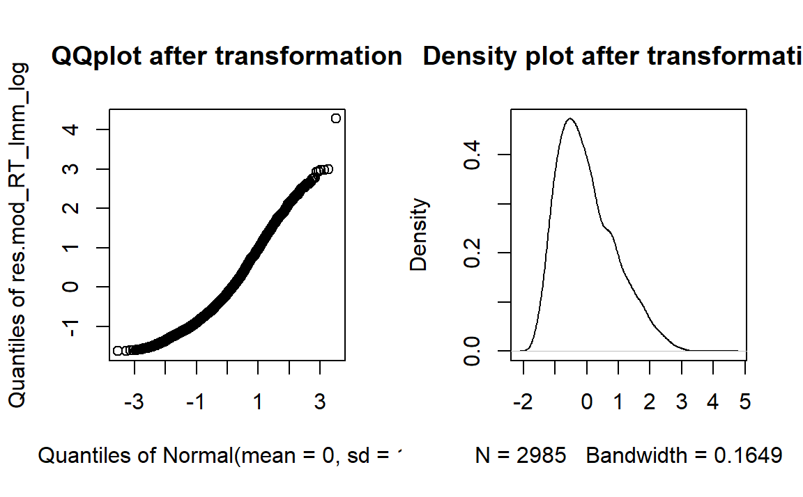
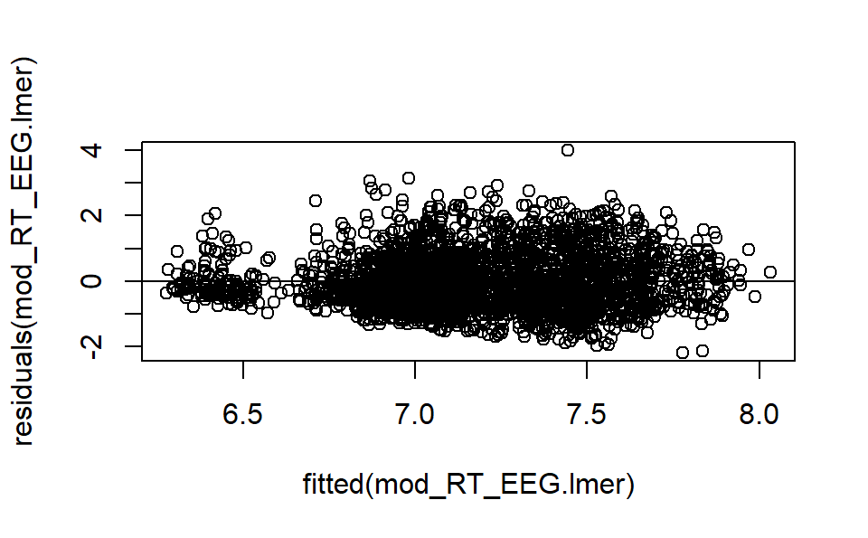

Task description
Our EEG paradigm included a delayed same-different matching task in which children had do indicate whether Face 1 and Face 2 showed the same (repeated) or a different emotional facial expression (novel). We measured participants’ accuracy rates and reaction times.
We excluded:
- Reaction times < 250 ms or > 7s
- Values </> 2.5 of the median absolute deviation (MAD) based on the individual participant
- Incorrect answers
- Rejected EEG trials
We calculated general linear mixed models (GLMM) for accuracy rates and linear mixed models (LMM) for reaction times. Fixed effects are defined for each model individually. Chronological age and working memory were entered as scaled covariates in all (general) linear mixed model analyses to control for cognitive abilities of the children as well as potential differences in age.
The random effects structure included random intercepts for participants (1|ID) and stimulus (1|Stim_Type). For each model, we commenced with the maximal random effect structure. Random intercepts were defined for participants and stimuli. Random slopes were defined for all predictors, but not covariates. We set correlations of random terms to zero and performed a principal component analysis on the random-effects variance-covariance estimates to determine the number of components supported by the data. We removed random effects explaining zero variance, in order to prevent over-parametrization. Afterwards, we checked whether all random intercepts improved the model using likelihood-ratio-testing.
Accuracy
We predicted that children would be less accurate when Face 1 and Face 2 were repeated (GLMM 1). We also expected the highest accuracy rates for pairings where happy faces were involved (GLMM 2).
Descriptive statistics
# Select outlier-free data and correct trials
EEG_task_Acc_plot = subset(EEG_task_data, Exclude_smaller_250ms == FALSE & Exclude_larger_7s == FALSE & Exclude_MAD == FALSE & EEG_trial_loss == 1)
EEG_task_Acc_plot = subset(EEG_task_Acc_plot, Response == 1)
## Plot separated by novel vs repeated trials
# Recode variable
EEG_task_Acc_plot$Cong[EEG_task_Acc_plot$Cong == 1] = "repeated"
EEG_task_Acc_plot$Cong[EEG_task_Acc_plot$Cong == 2] = "novel"
# Get accuracy for novel and repeated condition
acc_all = data.frame(xtabs(~ID+Cong, EEG_task_Acc_plot))
# Recode to accuracy in percent (72 novel trials, 72 repeated trials)
acc_all$Freq = (acc_all$Freq/72)*100
# Factor condition
acc_all$Cong = as.factor(acc_all$Cong)
# Calculate descriptives on accuracy
stats_acc_all = summarySE(acc_all, measurevar="Freq", groupvars=c("Cong"))
# Plot accuracy
EEG_acc_plot=ggplot(stats_acc_all, aes(x=Cong, y=Freq, fill = Cong)) +
geom_bar(position=position_dodge(), stat="identity",colour="black", size=0.7,width=0.9) +
geom_errorbar(aes(ymin=Freq-se, ymax=Freq+se), size=1, width=0.2, position=position_dodge(.9)) +
labs (x= "", y = "Accuracy [%]") +
scale_fill_manual(values=nov_col)+
coord_cartesian(ylim = c(0, 65)) +
scale_y_continuous(breaks=seq(0,60,20))+
theme_bw()+
theme_SN
## Plot separated by emotions
# Select outlier-free data and correct trials
EEG_task_Acc_targ_plot = subset(EEG_task_data, Exclude_smaller_250ms == FALSE & Exclude_larger_7s == FALSE & Exclude_MAD == FALSE & EEG_trial_loss == 1)
EEG_task_Acc_targ_plot = subset(EEG_task_Acc_targ_plot,Response == 1)
# Recode variable
EEG_task_Acc_targ_plot$Target[EEG_task_Acc_targ_plot$Target==4] = "happy"
EEG_task_Acc_targ_plot$Target[EEG_task_Acc_targ_plot$Target==5] = "neutral"
EEG_task_Acc_targ_plot$Target[EEG_task_Acc_targ_plot$Target==6] = "angry"
EEG_task_Acc_targ_plot$Target[EEG_task_Acc_targ_plot$Target==7] = "happy"
EEG_task_Acc_targ_plot$Target[EEG_task_Acc_targ_plot$Target==8] = "neutral"
EEG_task_Acc_targ_plot$Target[EEG_task_Acc_targ_plot$Target==9] = "angry"
EEG_task_Acc_targ_plot$Target = factor(EEG_task_Acc_targ_plot$Target, levels=c("neutral","happy","angry"))
# Get accuracy for novel and repeated condition
acc_emo = data.frame(xtabs(~ID+Target, EEG_task_Acc_targ_plot))
# Recode to accuracy in percent (48 happy trials, 49 neutral trials, 47 angry trials)
acc_emo$Freq[acc_emo$Target== "happy"] = (acc_emo$Freq[acc_emo$Target== "happy"]/48)*100
acc_emo$Freq[acc_emo$Target== "neutral"] = (acc_emo$Freq[acc_emo$Target== "neutral"]/49)*100
acc_emo$Freq[acc_emo$Target== "angry"] = (acc_emo$Freq[acc_emo$Target== "angry"]/47)*100
# Factor condition
acc_emo$Target = as.factor(acc_emo$Target)
# Calculate descriptives on accuracy
stats_acc_emo = summarySE(acc_emo, measurevar="Freq", groupvars=c("Target"))
# Plot accuracy
EEG_acc_emo_plot=ggplot(stats_acc_emo, aes(x=Target, y=Freq, fill = Target)) +
geom_bar(position=position_dodge(), stat="identity",colour="black", size=0.7,width=0.9) +
geom_errorbar(aes(ymin=Freq-se, ymax=Freq+se), size=1, width=0.2, position=position_dodge(.9)) +
labs (x = "", y = "Accuracy [%]") +
coord_cartesian(ylim = c(0, 65)) +
scale_y_continuous(breaks=seq(0,60,20))+
scale_fill_manual(values=emotion_col)+
theme_bw()+
theme_SN+
theme(axis.title.y=element_blank(),
axis.text.y=element_blank())
# Display plots
fig_EEG_acc = cowplot::plot_grid(EEG_acc_plot, EEG_acc_emo_plot, ncol=2, rel_widths=c(1, 1))
fig_EEG_acc 
Model specification
GLMM 1: Random effect structure
# Select outlier-free data
EEG_task_Acc_glmm = subset(EEG_task_data,Exclude_smaller_250ms == FALSE & Exclude_larger_7s == FALSE & Exclude_MAD == FALSE & EEG_trial_loss == 1)
# Factor random effects
EEG_task_Acc_glmm$ID = as.factor(EEG_task_Acc_glmm$ID)
EEG_task_Acc_glmm$Stim_Type = as.factor(EEG_task_Acc_glmm$Stim_Type)
# Factor fixed factor congruency
EEG_task_Acc_glmm$Cong[EEG_task_Acc_glmm$Cong==1] = "repeated"
EEG_task_Acc_glmm$Cong[EEG_task_Acc_glmm$Cong==2] = "novel"
EEG_task_Acc_glmm$Cong = factor(EEG_task_Acc_glmm$Cong)
# Set effect coding contrast
contrasts(EEG_task_Acc_glmm$Cong) = contr.sum(2)/2
## Construct full model
# Create contrast matrix
mm_EEG_task_Acc = model.matrix( ~ Cong, EEG_task_Acc_glmm)
# Attach to dataframe
EEG_task_Acc_glmm = EEG_task_Acc_glmm
EEG_task_Acc_glmm[,(ncol(EEG_task_Acc_glmm)+1):(ncol(EEG_task_Acc_glmm)+2)] = mm_EEG_task_Acc
names(EEG_task_Acc_glmm)[(ncol(EEG_task_Acc_glmm)-1):ncol(EEG_task_Acc_glmm)] = c("Grand Mean", "Nov_Rep")
# Build full model
mod_Acc_EEG.glmm1 = glmer(Response ~ Nov_Rep + scale(Age) + scale(WM) +
(1 + Nov_Rep||ID) +
(1 + Nov_Rep||Stim_Type),
data = EEG_task_Acc_glmm,control=glmerControl(calc.derivs = FALSE),
family = binomial)
## Check random effect structure (cut-off: 0.005 - 0.001)
# 1st: check how many zero variance terms you got in random effects
summary(rePCA(mod_Acc_EEG.glmm1))
# 2nd: check which random terms explain the least variance
print(VarCorr(mod_Acc_EEG.glmm1),comp = "Variance")
# Adapt model
mod_Acc_EEG.glmm2 = glmer(Response ~ Nov_Rep + scale(Age) + scale(WM) +
(1 + Nov_Rep||ID) +
(0 + Nov_Rep||Stim_Type),
data = EEG_task_Acc_glmm,control=glmerControl(calc.derivs = FALSE),
family = binomial)
# 1st: check how many zero variance terms you got in random effects
summary(rePCA(mod_Acc_EEG.glmm2))
# 2nd: check which random terms explain the least variance
print(VarCorr(mod_Acc_EEG.glmm2),comp = "Variance")
## Likelihood-ratio-testing
# ID
mod_Acc_EEG.glmm3 = glmer(Response ~ Nov_Rep + scale(Age) + scale(WM) +
(1 |ID) +
(0 + Nov_Rep||Stim_Type),
data = EEG_task_Acc_glmm,control=glmerControl(calc.derivs = FALSE),
family = binomial)
# Stim Type
mod_Acc_EEG.glmm4 = glmer(Response ~ Nov_Rep + scale(Age) + scale(WM) +
(1 + Nov_Rep||ID) +
(1|Stim_Type),
data = EEG_task_Acc_glmm,control=glmerControl(calc.derivs = FALSE),
family = binomial)
# Calculate ANOVAs
anov_glmm1_glmm2_3 = anova(mod_Acc_EEG.glmm2,mod_Acc_EEG.glmm3)
anov_glmm1_glmm2_4 = anova(mod_Acc_EEG.glmm2,mod_Acc_EEG.glmm4)
# Final model
mod_Acc_EEG.glmm4 = glmer(Response ~ Nov_Rep + scale(Age) + scale(WM) +
(1 + Nov_Rep||ID) +
(1 | Stim_Type),
data = EEG_task_Acc_glmm,control=glmerControl(calc.derivs = FALSE),
family = binomial)According to our hypothesis, the main fixed effects of interest was novelty of Face 2. We applied a scaled sum contrast to compare trials with novel vs repeated emotions (Novel vs Repeated). Consequently, we fitted single-trial data to the following model:
Response ~ Nov_Rep + scale(Age) + scale(WM) + (1 + Nov_Rep || , ID) + (1 | Stim_Type)
GLMM 1: Overdispersion
If the p-value is < 0.05, data would be overdispersed. Here p > 0.05. Hence, overdispersion is not a problem.
# Assumption check: Appropriate estimation of variance - check for overdispersion
overdisp_fun(mod_Acc_EEG.glmm4) chisq ratio rdf p
2259.43 0.86 2624.00 1.00 GLMM 2: Random effect structure
# Get outlier-free data
EEG_task_Acc_targ_glmm = subset(EEG_task_data, Exclude_smaller_250ms == FALSE & Exclude_larger_7s == FALSE & Exclude_MAD == FALSE & EEG_trial_loss == 1)
# Rename variables
EEG_task_Acc_targ_glmm$Target[EEG_task_Acc_targ_glmm$Target==4] = "hap"
EEG_task_Acc_targ_glmm$Target[EEG_task_Acc_targ_glmm$Target==5] = "neu"
EEG_task_Acc_targ_glmm$Target[EEG_task_Acc_targ_glmm$Target==6] = "ang"
EEG_task_Acc_targ_glmm$Target[EEG_task_Acc_targ_glmm$Target==7] = "hap"
EEG_task_Acc_targ_glmm$Target[EEG_task_Acc_targ_glmm$Target==8] = "neu"
EEG_task_Acc_targ_glmm$Target[EEG_task_Acc_targ_glmm$Target==9] = "ang"
# Create factor, get neutral as baseline
EEG_task_Acc_targ_glmm$Target = factor(EEG_task_Acc_targ_glmm$Target, levels=c("neu","hap","ang"))
EEG_task_Acc_targ_glmm$ID = as.factor(EEG_task_Acc_targ_glmm$ID)
EEG_task_Acc_targ_glmm$Stim_Type = as.factor(EEG_task_Acc_targ_glmm$Stim_Type)
# Set treatment contrast
contrasts(EEG_task_Acc_targ_glmm$Target) = contr.treatment(3)
## Construct full model
# Add contrast columns
mm_EEG_task_Acc_targ = model.matrix( ~ Target, EEG_task_Acc_targ_glmm)
# Attach to dataframe
EEG_task_Acc_targ_glmm[,(ncol(EEG_task_Acc_targ_glmm)+1):(ncol(EEG_task_Acc_targ_glmm)+3)] = mm_EEG_task_Acc_targ
names(EEG_task_Acc_targ_glmm)[(ncol(EEG_task_Acc_targ_glmm)-2):ncol(EEG_task_Acc_targ_glmm)] = c("Mean","Neu_Hap", "Neu_Ang")
# Build full model
mod_Acc_targ.glmm1 = glmer(Response ~ Neu_Hap + Neu_Ang + scale(Age) + scale(WM)
+ (1 + Neu_Hap + Neu_Ang||ID)
+ (1 + Neu_Hap + Neu_Ang||Stim_Type),
data = EEG_task_Acc_targ_glmm,
control=glmerControl(calc.derivs = FALSE),
family = binomial)
## Check random effect structure (cut-off: 0.005 - 0.001)
# 1st: check how many zero variance terms you got in random effects
summary(rePCA(mod_Acc_targ.glmm1))
# 2nd: check which random terms explain the least variance
print(VarCorr(mod_Acc_targ.glmm1),comp = "Variance")
# Re-build model
mod_Acc_targ.glmm2 = glmer(Response ~ Neu_Hap + Neu_Ang + scale(Age) + scale(WM)
+ (1 + Neu_Ang||ID)
+ (0 + Neu_Hap + Neu_Ang||Stim_Type),
data = EEG_task_Acc_targ_glmm,
control=glmerControl(calc.derivs = FALSE),
family = binomial)
# Re-check random structure
summary(rePCA(mod_Acc_targ.glmm2))
print(VarCorr(mod_Acc_targ.glmm2),comp = "Variance")
## Likelihood-ratio testing
# ID
mod_Acc_targ.glmm3 = glmer(Response ~ Neu_Hap + Neu_Ang + scale(Age) + scale(WM)
+ (1 |ID)
+ (0 + Neu_Hap + Neu_Ang||Stim_Type),
data = EEG_task_Acc_targ_glmm,
control=glmerControl(calc.derivs = FALSE),
family = binomial)
# Stimulus type
mod_Acc_targ.glmm4 = glmer(Response ~ Neu_Hap + Neu_Ang + scale(Age) + scale(WM)
+ (1 + Neu_Ang||ID)
+ (1|Stim_Type),
data = EEG_task_Acc_targ_glmm,
control=glmerControl(calc.derivs = FALSE),
family = binomial)
# Calculate ANOVAs
anov_glmm2_glmm3 = anova(mod_Acc_targ.glmm2,mod_Acc_targ.glmm3)
anov_glmm2_glmm4 = anova(mod_Acc_targ.glmm2,mod_Acc_targ.glmm4)
# Final model
mod_Acc_targ.glmm5 = glmer(Response ~ Neu_Hap + Neu_Ang + scale(Age) + scale(WM)
+ (1 |ID)
+ (0 + Neu_Hap + Neu_Ang||Stim_Type),
data = EEG_task_Acc_targ_glmm,
control=glmerControl(calc.derivs = FALSE),
family = binomial)According to our hypothesis, the main fixed effects of interest was emotion of Face 2. We applied a treatment contrast comparing neutral vs happy and neutral vs angry emotional facial expressions (Neutral vs Happy, Neutral vs Angry). The final model was comprised of:
Response ~ Neu_Hap + Neu_Ang + scale(Age) + scale(WM) + (1 | , ID) + (0 + Neu_Hap + Neu_Ang || Stim_Type)
GLMM 2: Overdispersion
If the p-value is < 0.05, data would be overdispersed. Here p > 0.05. Hence, overdispersion is not a problem.
# Assumption check: Appropriate estimation of variance - check for overdispersion
overdisp_fun(mod_Acc_targ.glmm5) chisq ratio rdf p
2340.25 0.89 2623.00 1.00 Results
Model results indicated that participants were equally accurate in trials with repeated in comparison to a novel emotion at Face 2. Descriptively, participants showed the highest accuracy when happy faces were presented as Face 2. This difference, however, was not significant in comparison to neutral faces. Similarly, there was no significant difference between angry and neutral facial expressions.
# Create labels
labels = c("Novel vs Repeated","Age","Working memory", "Neutral vs Happy", "Neutral vs Angry")
# Create table
tab_model(mod_Acc_EEG.glmm4, mod_Acc_targ.glmm5,
show.intercept = FALSE,
pred.labels=labels, show.ci = FALSE,
show.se = TRUE, string.se = "SE",
show.stat = TRUE, string.stat = "t",
show.re.var = TRUE, show.obs = FALSE,
emph.p = TRUE, dv.labels=c("Face 2 Novelty","Face 2 Emotion") , show.icc = TRUE)| Face 2 Novelty | Face 2 Emotion | |||||||
|---|---|---|---|---|---|---|---|---|
| Predictors | Odds Ratios | SE | t | p | Odds Ratios | SE | t | p |
| Novel vs Repeated | 1.02 | 0.33 | 0.07 | 0.944 | ||||
| Age | 1.01 | 0.22 | 0.06 | 0.955 | 1.02 | 0.21 | 0.11 | 0.916 |
| Working memory | 0.80 | 0.22 | -1.01 | 0.312 | 0.79 | 0.21 | -1.09 | 0.276 |
| Neutral vs Happy | 1.14 | 0.12 | 1.10 | 0.269 | ||||
| Neutral vs Angry | 1.06 | 0.13 | 0.45 | 0.652 | ||||
| Random Effects | ||||||||
| σ2 | 3.29 | 3.29 | ||||||
| τ00 | 0.00 Stim_Type | 0.21 Stim_Type | ||||||
| 2.69 ID | 0.06 Stim_Type.1 | |||||||
| 1.18 ID.1 | 1.12 ID | |||||||
| ICC | 0.17 | 0.26 | ||||||
| N | 28 ID | 28 ID | ||||||
| 72 Stim_Type | 72 Stim_Type | |||||||
| Marginal R2 / Conditional R2 | 0.012 / 0.180 | 0.012 / 0.274 | ||||||
Note: p-values for the fixed effects calculated using Wald-statistics approximation, uncorrected. SE: standard error; t: test statistic coefficient; p: p-value; σ2: within-group variance; τ00: between-group variance; ICC: interclass correlation (ratio of between-cluster variance to total variance); N: number of random effects.
Reaction time
We expected children to be slower when Face 1 and Face 2 showed the same emotion (LMM1). Additionally, we expected the lowest reaction times for pairings where happy faces were involved (LMM2). Assumptions for multiple regression were checked for all models (normality of the residuals, linearity, multicollinearity, homoscedasticity).
Descriptives
## Plot separated by novel vs repeated trials
# Choose outlier-free and correct trial data
EEG_task_RT_plot = subset(EEG_task_data,Exclude_smaller_250ms == FALSE & Exclude_larger_7s == FALSE & Exclude_MAD == FALSE & EEG_trial_loss == 1)
EEG_task_RT_plot = subset(EEG_task_RT_plot, Response == 1)
# Rename values for repeated and novel trials
EEG_task_RT_plot$Cong[EEG_task_RT_plot$Cong==1] = "repeated"
EEG_task_RT_plot$Cong[EEG_task_RT_plot$Cong==2] = "novel"
# Calculate summary
lb = function(x) mean(x) - sd(x)
ub = function(x) mean(x) + sd(x)
sumld = ddply(EEG_task_RT_plot , ~ Cong, summarise,
mean = mean(RTs), median = median(RTs), lower = lb(RTs), upper = ub(RTs))
# Plot rainclouds
EEG_task_RT_rain = ggplot(data = EEG_task_RT_plot, aes(y = RTs, x = Cong, fill = Cong)) +
geom_flat_violin(position = position_nudge(x = .18, y = 0), adjust=1.5, trim=TRUE, alpha = 1, color="black") +
geom_point(aes(y = RTs, color = Cong), shape = 19, position = position_jitter(width = .1), size = .7, alpha = 1) +
geom_point(data = sumld, aes(x = Cong, y = mean), position = position_nudge(x = .22), size = 2.5) +
geom_errorbar(data = sumld, aes(ymin = lower, ymax = upper, y = mean), position = position_nudge(x = .22), width = 0)+
scale_y_continuous(name="Reaction time [ms]", breaks=seq(0,7000,2000), limits=c(250,7000))+
scale_x_discrete(name="")+
expand_limits(x =1, y = 1) +
guides(fill = FALSE, color = FALSE) +
coord_flip() + # flip or not?
scale_fill_manual(values=nov_col) +
scale_color_manual(values=nov_col)+
theme_bw()+
theme_SN +
theme(panel.grid.major.y = element_blank())
## Plot separated by emotions
# Choose outlier-free and correct trial data
EEG_task_RT_targ_plot = subset(EEG_task_data,Exclude_smaller_250ms == FALSE & Exclude_larger_7s == FALSE & Exclude_MAD == FALSE)
EEG_task_RT_targ_plot = subset(EEG_task_RT_targ_plot, Response == 1)
# Choose EEG task data with correct trials
EEG_task_RT_targ_plot = subset(EEG_task_RT_targ_plot, Response == 1)
# Rename variables
EEG_task_RT_targ_plot$Target[EEG_task_RT_targ_plot$Target==4] = "happy"
EEG_task_RT_targ_plot$Target[EEG_task_RT_targ_plot$Target==5] = "neutral"
EEG_task_RT_targ_plot$Target[EEG_task_RT_targ_plot$Target==6] = "angry"
EEG_task_RT_targ_plot$Target[EEG_task_RT_targ_plot$Target==7] = "happy"
EEG_task_RT_targ_plot$Target[EEG_task_RT_targ_plot$Target==8] = "neutral"
EEG_task_RT_targ_plot$Target[EEG_task_RT_targ_plot$Target==9] = "angry"
# Set target as factor / Recode target
EEG_task_RT_targ_plot$Target = factor(EEG_task_RT_targ_plot$Target, levels=c("neutral","happy","angry"))
# Create summary
sumld = ddply(EEG_task_RT_targ_plot , ~ Target, summarise,
mean = mean(RTs), median = median(RTs), lower = lb(RTs), upper = ub(RTs))
# Plot rainclouds
EEG_RT_emo_rain = ggplot(data = EEG_task_RT_targ_plot, aes(y = RTs, x = Target, fill = Target)) +
geom_point(aes(y = RTs, color = Target), shape = 19, position = position_jitter(width = .1), size = .7, alpha = 1) +
geom_flat_violin(position = position_nudge(x = .18, y = 0), adjust=1.5, trim=TRUE, alpha= 1, color="black") +
geom_point(data = sumld, aes(x = Target, y = mean), position = position_nudge(x = .22), size = 2.5) +
geom_errorbar(data = sumld, aes(ymin = lower, ymax = upper, y = mean), position = position_nudge(x = .22), width = 0)+
scale_y_continuous(name="Reaction time [ms]", breaks=seq(0,7000,2000), limits=c(250,7000))+
xlab("")+
expand_limits(x = 1.00, y = 1) +
guides(fill = FALSE, color = FALSE) +
coord_flip() + # flip or not?
scale_fill_manual(values=emotion_col) +
scale_color_manual(values=emotion_col)+
theme_bw()+
theme_SN +
theme(panel.grid.major.y = element_blank())
# Display plots
fig_EEG_RT = cowplot::plot_grid(EEG_task_RT_rain, EEG_RT_emo_rain, ncol=2, rel_widths=c(1, 1))
fig_EEG_RT
Model specification
LMM1: Random effect structure
# Choose outlier-free data and correct answers
EEG_task_RT_lmm = subset(EEG_task_data,Exclude_smaller_250ms == FALSE & Exclude_larger_7s == FALSE & Exclude_MAD == FALSE & EEG_trial_loss == 1)
EEG_task_RT_lmm = subset(EEG_task_RT_lmm, Response == 1)
# Recode for repeated and novel trials
EEG_task_RT_lmm$Cong[EEG_task_RT_lmm$Cong==1] = "repeated"
EEG_task_RT_lmm$Cong[EEG_task_RT_lmm$Cong==2] = "novel"
# Prepare fixed factors
EEG_task_RT_lmm$Cong = factor(EEG_task_RT_lmm$Cong)
# Factor ID and stimulus type
EEG_task_RT_lmm$Stim_Type = factor(EEG_task_RT_lmm$Stim_Type)
EEG_task_RT_lmm$ID = factor(EEG_task_RT_lmm$ID)
# Define effect coding contrast for novelty
contrasts(EEG_task_RT_lmm$Cong) = contr.sum(2)/2
# Create contrast matrix
mm_EEG_task_RT = model.matrix( ~ Cong, EEG_task_RT_lmm)
# Attach to dataframe
EEG_task_RT_lmm[,(ncol(EEG_task_RT_lmm)+1):(ncol(EEG_task_RT_lmm)+2)] = mm_EEG_task_RT
names(EEG_task_RT_lmm)[(ncol(EEG_task_RT_lmm)-1):ncol(EEG_task_RT_lmm)] = c("Grand Mean", "Nov_Rep")
# Build full model with new names
mod_RT_EEG.lmer1 = lmer(log(RTs) ~ Nov_Rep + scale(Age) + scale(WM) +
(1 + Nov_Rep ||ID) +
(1 + Nov_Rep ||Stim_Type),
data = EEG_task_RT_lmm,control=lmerControl(calc.derivs = FALSE), REML = FALSE)
## PCA to check random effect structure (Cut-off: 0.005 - 0.001)
# 1st: check how many zero variance terms you got in random effects
summary(rePCA(mod_RT_EEG.lmer1))
# 2nd: check which random terms explain the least variance
print(VarCorr(mod_RT_EEG.lmer1),comp = "Variance")
# 3rd: remove all terms with zero variance --> comprises final model
mod_RT_EEG.lmer2 = lmer(log(RTs) ~ Nov_Rep + scale(Age) + scale(WM) +
(1 + Nov_Rep||ID) +
(1 |Stim_Type),
data = EEG_task_RT_lmm,control=lmerControl(calc.derivs = FALSE), REML = FALSE)
# 4th: re-check the model PCA / variance of random factors
summary(rePCA(mod_RT_EEG.lmer2))
print(VarCorr(mod_RT_EEG.lmer2),comp = "Variance")
# 5th: Do Likelihood Ratio Test (LRT) - to check whether all random slopes improve the model
# LRT without random slope Nov_Rep for ID
mod_RT_EEG.lmer3 = lmer(log(RTs) ~ Nov_Rep + scale(Age) + scale(WM) +
(1 |ID) +
(1 |Stim_Type),
data = EEG_task_RT_lmm,control=lmerControl(calc.derivs = FALSE), REML = FALSE)
# Calculate ANOVA
anova(mod_RT_EEG.lmer2,mod_RT_EEG.lmer3)
# LRT without random slope Nov_Rep for Stim_Type
mod_RT_EEG.lmer4 = lmer(log(RTs) ~ Nov_Rep + scale(Age) + scale(WM) +
(1 + Nov_Rep||ID) +
(1 |Stim_Type),
data = EEG_task_RT_lmm,control=lmerControl(calc.derivs = FALSE), REML = FALSE)
# Calculate ANOVA
anova(mod_RT_EEG.lmer2,mod_RT_EEG.lmer4)
# 6th: remove random slopes which did not improve the model
mod_RT_EEG.lmer5 = lmer(log(RTs) ~ Nov_Rep + scale(Age) + scale(WM) +
(1 + Nov_Rep||ID) +
(1 |Stim_Type),
data = EEG_task_RT_lmm,control=lmerControl(calc.derivs = FALSE), REML = FALSE)
# 7th: re-check the model PCA / variance of random factors
summary(rePCA(mod_RT_EEG.lmer5))
print(VarCorr(mod_RT_EEG.lmer5),comp = "Variance")We applied a scaled sum contrast to compare reaction times for novel vs repeated facial expressions. The final model was built as:
log(RTs) ~ Nov_Rep + scale(Age) + scale(WM) + ((1 | ID) + (0 + , Nov_Rep | ID)) + (1 | Stim_Type)
LMM1: Normality of residuals
RTs were log-transformed (determined using the Box-Cox procedure) to meet the assumption of normally distributed residuals.
## Check properties of DV / residuals
# Visualize normality assumption of residuals (without log transform)
mod_RT_lmm_no_log = lm(RTs ~ Cong, data=EEG_task_RT_lmm)
res.mod_RT_lmm_no_log = residuals(mod_RT_lmm_no_log)
par(mfrow=c(1,2))
qqpl_RT_lmm_no_log = qqPlot(res.mod_RT_lmm_no_log, main="QQplot before transformation")
norm_RT_lmm_no_log = plot(density(res.mod_RT_lmm_no_log), main="Density plot before transformation") 
par(mfrow=c(1,1))
# Check which transformation of DV is suitable
# Calculate box-cox plot
mod_RT_targ = lm(RTs ~ Cong, data=EEG_task_RT_lmm)
boxcox(mod_RT_targ) 
# Visualize normality assumption of residuals (with log transform)
mod_RT_lmm_log = lm(log(RTs) ~ Cong, data=EEG_task_RT_lmm)
res.mod_RT_lmm_log = residuals(mod_RT_lmm_log)
par(mfrow=c(1,2))
qqpl_RT_lmm_log = qqPlot(res.mod_RT_lmm_log, main="QQplot after transformation")
norm_RT_lmm_log = plot(density(res.mod_RT_lmm_log), main="Density plot after transformation") 
par(mfrow=c(1,1))LMM1: Homoscedasticity
Based on the figure, we assume homoscedasticity.
# Check homoscedasticity
plot(fitted(mod_RT_EEG.lmer5), residuals(mod_RT_EEG.lmer5))
abline(0, 0) 
LMM2: Random effect structure
# Choose outlier-free data and correct answers
EEG_task_RT_targ_lmm = subset(EEG_task_data, Response == 1)
EEG_task_RT_targ_lmm = subset(EEG_task_RT_targ_lmm,Exclude_smaller_250ms == FALSE & Exclude_larger_7s == FALSE & Exclude_MAD == FALSE & EEG_trial_loss == 1)
# Rename variables
EEG_task_RT_targ_lmm$Target[EEG_task_RT_targ_lmm$Target==4] = "hap"
EEG_task_RT_targ_lmm$Target[EEG_task_RT_targ_lmm$Target==5] = "neu"
EEG_task_RT_targ_lmm$Target[EEG_task_RT_targ_lmm$Target==6] = "ang"
EEG_task_RT_targ_lmm$Target[EEG_task_RT_targ_lmm$Target==7] = "hap"
EEG_task_RT_targ_lmm$Target[EEG_task_RT_targ_lmm$Target==8] = "neu"
EEG_task_RT_targ_lmm$Target[EEG_task_RT_targ_lmm$Target==9] = "ang"
# Create factors, define neutral as baseline
EEG_task_RT_targ_lmm$Target = factor(EEG_task_RT_targ_lmm$Target, levels=c("neu","hap","ang"))
EEG_task_RT_targ_lmm$ID = as.factor(EEG_task_RT_targ_lmm$ID)
EEG_task_RT_targ_lmm$Stim_Type = as.factor(EEG_task_RT_targ_lmm$Stim_Type)
# Create contrast for emotion
contrasts(EEG_task_RT_targ_lmm$Target) = contr.treatment(3, base = 1)
# Add contrast columns
mm_EEG_task_RT_targ = model.matrix( ~ Target, EEG_task_RT_targ_lmm)
# Attach to dataframe
EEG_task_RT_targ_lmm[,(ncol(EEG_task_RT_targ_lmm)+1):(ncol(EEG_task_RT_targ_lmm)+3)] = mm_EEG_task_RT_targ
names(EEG_task_RT_targ_lmm)[(ncol(EEG_task_RT_targ_lmm)-2):ncol(EEG_task_RT_targ_lmm)] = c("Mean","Hap_Neu", "Ang_Neu")
## Define model
mod_RT_targ.lmer1 = lmer(log(RTs) ~
Hap_Neu + Ang_Neu + scale(Age) + scale(WM) +
(1 + Hap_Neu + Ang_Neu||ID) +
(1 + Hap_Neu + Ang_Neu||Stim_Type),
data = EEG_task_RT_targ_lmm,
control=lmerControl(calc.derivs = FALSE), REML = FALSE)
# 1st: check how many zero variance terms you got in random effects
summary(rePCA(mod_RT_targ.lmer1))
# 2nd: check which random terms explain the least variance
print(VarCorr(mod_RT_targ.lmer1),comp = "Variance")
# 3rd: remove all terms with zero variance --> comprises final model
mod_RT_targ.lmer2 = lmer(log(RTs) ~
Hap_Neu + Ang_Neu + scale(Age) + scale(WM) +
(1 |ID) +
(0 + Hap_Neu + Ang_Neu||Stim_Type),
data = EEG_task_RT_targ_lmm,
control=lmerControl(calc.derivs = FALSE), REML = FALSE)
# 4th: re-check the model PCA / variance of random factors
summary(rePCA(mod_RT_targ.lmer2))
print(VarCorr(mod_RT_targ.lmer2),comp = "Variance")
# 5th: Likelihood-ratio-testing
# Stim Type
mod_RT_targ.lmer3 = lmer(log(RTs) ~
Hap_Neu + Ang_Neu + scale(Age) + scale(WM) +
(1 |ID) +
(1 |Stim_Type),
data = EEG_task_RT_targ_lmm,
control=lmerControl(calc.derivs = FALSE), REML = FALSE)
# Calculate ANOVA
anova(mod_RT_targ.lmer2,mod_RT_targ.lmer3)
# Re-check the model PCA / variance of random factors
summary(rePCA(mod_RT_targ.lmer3))
print(VarCorr(mod_RT_targ.lmer3),comp = "Variance")According to our hypothesis, the main fixed effects of interest was emotion of Face 2. we applied a treatment contrast comparing neutral vs happy and neutral vs angry emotional facial expressions (Neutral vs Happy, Neutral vs Angry). The final model was comprised of:
log(RTs) ~ Hap_Neu + Ang_Neu + scale(Age) + scale(WM) + (1 | , ID) + (1 | Stim_Type)
LMM2: Normality of residuals
RTs were log-transformed (determined using the Box-Cox procedure) to meet the assumption of normally distributed residuals.
## Check properties of DV / residuals
# Visualize normality assumption of residuals (without log transform)
mod_RT_lmm_no_log = lm(RTs ~ Target, data=EEG_task_RT_lmm)
res.mod_RT_lmm_no_log = residuals(mod_RT_lmm_no_log)
par(mfrow=c(1,2))
qqpl_RT_lmm_no_log = qqPlot(res.mod_RT_lmm_no_log, main="QQplot before transformation")
norm_RT_lmm_no_log = plot(density(res.mod_RT_lmm_no_log), main="Density plot before transformation") 
par(mfrow=c(1,1))
# Check which transformation of DV is suitable
# Calculate box-cox plot
mod_resp = lm(RTs ~ Target, data=EEG_task_RT_targ_lmm)
boxcox(mod_resp) 
# Visualize normality assumption of residuals (with log transform)
mod_RT_lmm_log = lm(log(RTs) ~ Target, data=EEG_task_RT_targ_lmm)
res.mod_RT_lmm_log = residuals(mod_RT_lmm_log)
par(mfrow=c(1,2))
qqpl_RT_lmm_log = qqPlot(res.mod_RT_lmm_log,main="QQplot after transformation")
norm_RT_lmm_log = plot(density(res.mod_RT_lmm_log), main="Density plot after transformation")
par(mfrow=c(1,1))LMM2: Homoscedasticity
Based on the figure, we assume homoscedasticity.
# Check homoscedasticity
plot(fitted(mod_RT_targ.lmer2), residuals(mod_RT_targ.lmer3))
abline(0, 0) 
Results
Contrary to our hypothesis, we did not find a significant main effect of novelty. Children seemed to be equally fast in detecting novel and repeated facial expression. Trials in which the emotion happy was presented as Face 2 were detected significantly faster compared to neutral faces. No difference between angry and neutral as Face 2 could be found.
# Create table
tab_model(mod_RT_EEG.lmer5, mod_RT_targ.lmer3,
show.intercept = FALSE,
pred.labels=labels,
string.est = "b",
show.se=TRUE, string.se = "SE",
show.stat=TRUE, string.stat = "t",
show.ci = FALSE,
show.re.var = TRUE, show.obs = FALSE,
emph.p = TRUE, dv.labels=c("Face 2 Novelty","Face 2 Emotion") , show.icc = TRUE)| Face 2 Novelty | Face 2 Emotion | |||||||
|---|---|---|---|---|---|---|---|---|
| Predictors | b | SE | t | p | b | SE | t | p |
| Novel vs Repeated | 0.05 | 0.04 | 1.35 | 0.177 | ||||
| Age | -0.05 | 0.06 | -0.77 | 0.439 | -0.05 | 0.06 | -0.79 | 0.430 |
| Working memory | 0.09 | 0.06 | 1.46 | 0.145 | 0.09 | 0.06 | 1.49 | 0.137 |
| Neutral vs Happy | -0.08 | 0.03 | -2.47 | 0.013 | ||||
| Neutral vs Angry | -0.05 | 0.03 | -1.36 | 0.174 | ||||
| Random Effects | ||||||||
| σ2 | 0.35 | 0.35 | ||||||
| τ00 | 0.00 Stim_Type | 0.00 Stim_Type | ||||||
| 0.01 ID | 0.11 ID | |||||||
| 0.11 ID.1 | ||||||||
| ICC | 0.02 | 0.24 | ||||||
| N | 28 ID | 28 ID | ||||||
| 72 Stim_Type | 72 Stim_Type | |||||||
| Marginal R2 / Conditional R2 | 0.025 / 0.043 | 0.020 / 0.253 | ||||||
Note: p-values for the fixed effects calculated using Wald-statistics approximation, uncorrected. b: unstandardized coefficient; SE: standard error; t: test statistic coefficient; p: p-value; σ2: within-group variance; τ00: between-group variance; ICC: interclass correlation (ratio of between-cluster variance to total variance); N: number of random effects.
Session info
# Get session info
sessionInfo()R version 3.6.2 (2019-12-12)
Platform: x86_64-w64-mingw32/x64 (64-bit)
Running under: Windows 10 x64 (build 18362)
Matrix products: default
locale:
[1] LC_COLLATE=German_Germany.1252 LC_CTYPE=German_Germany.1252
[3] LC_MONETARY=German_Germany.1252 LC_NUMERIC=C
[5] LC_TIME=German_Germany.1252
attached base packages:
[1] stats graphics grDevices utils datasets methods base
other attached packages:
[1] forcats_0.5.0 stringr_1.4.0 purrr_0.3.4
[4] readr_1.3.1 tidyr_1.1.0 tibble_3.0.1
[7] tidyverse_1.3.0 sjlabelled_1.1.3 sjmisc_2.8.4
[10] sjPlot_2.8.3 Rmisc_1.5 plyr_1.8.6
[13] reshape2_1.4.4 psych_1.9.12.31 MASS_7.3-51.5
[16] lmerTest_3.1-2 lme4_1.1-23 Matrix_1.2-18
[19] Hmisc_4.4-0 Formula_1.2-3 survival_3.1-8
[22] lattice_0.20-38 ggstatsplot_0.4.0 ez_4.4-0
[25] EnvStats_2.3.1 eeptools_1.2.2 ggplot2_3.3.0
[28] dplyr_0.8.5 cowplot_1.0.0 summarytools_0.9.6
[31] miceadds_3.9-14 mice_3.9.0 rmdformats_0.3.7
[34] XLConnectJars_0.2-15 XLConnect_1.0.1 kableExtra_1.1.0
loaded via a namespace (and not attached):
[1] estimability_1.3 coda_0.19-3 acepack_1.4.1
[4] knitr_1.28 multcomp_1.4-13 rpart_4.1-15
[7] data.table_1.12.8 inline_0.3.15 generics_0.0.2
[10] callr_3.4.3 TH.data_1.0-10 correlation_0.2.0
[13] webshot_0.5.2 xml2_1.3.1 lubridate_1.7.8
[16] httpuv_1.5.2 StanHeaders_2.21.0-1 assertthat_0.2.1
[19] WRS2_1.0-0 xfun_0.13 hms_0.5.3
[22] rJava_0.9-12 evaluate_0.14 promises_1.1.0
[25] tidyBF_0.2.0 fansi_0.4.1 dbplyr_1.4.3
[28] readxl_1.3.1 htmlwidgets_1.5.1 DBI_1.1.0
[31] reshape_0.8.8 stats4_3.6.2 paletteer_1.1.0
[34] ellipsis_0.3.0 rcompanion_2.3.25 backports_1.1.6
[37] bookdown_0.18 insight_0.8.3 ggcorrplot_0.1.3
[40] rapportools_1.0 libcoin_1.0-5 jmvcore_1.2.5
[43] vctrs_0.3.1 abind_1.4-5 withr_2.2.0
[46] pryr_0.1.4 metaBMA_0.6.2 bdsmatrix_1.3-4
[49] checkmate_2.0.0 emmeans_1.4.6 vcd_1.4-7
[52] prettyunits_1.1.1 mnormt_1.5-6 fastGHQuad_1.0
[55] cluster_2.1.0 crayon_1.3.4 pkgconfig_2.0.3
[58] nlme_3.1-147 statsExpressions_0.4.1 palr_0.2.0
[61] nnet_7.3-12 pals_1.6 rlang_0.4.7
[64] lifecycle_0.2.0 miniUI_0.1.1.1 groupedstats_0.2.2
[67] skimr_2.1.1 LaplacesDemon_16.1.4 MatrixModels_0.4-1
[70] sandwich_2.5-1 EMT_1.1 modelr_0.1.6
[73] dichromat_2.0-0 cellranger_1.1.0 tcltk_3.6.2
[ reached getOption("max.print") -- omitted 114 entries ]